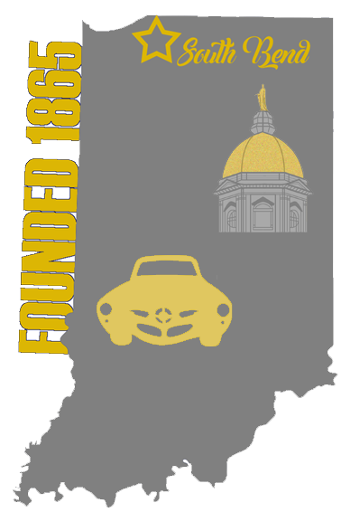
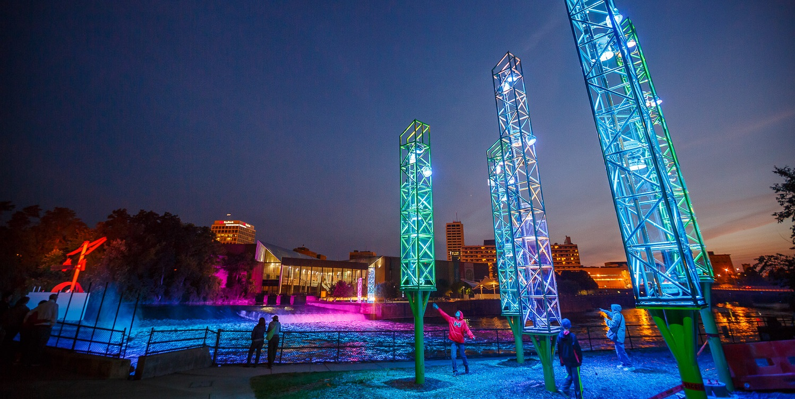
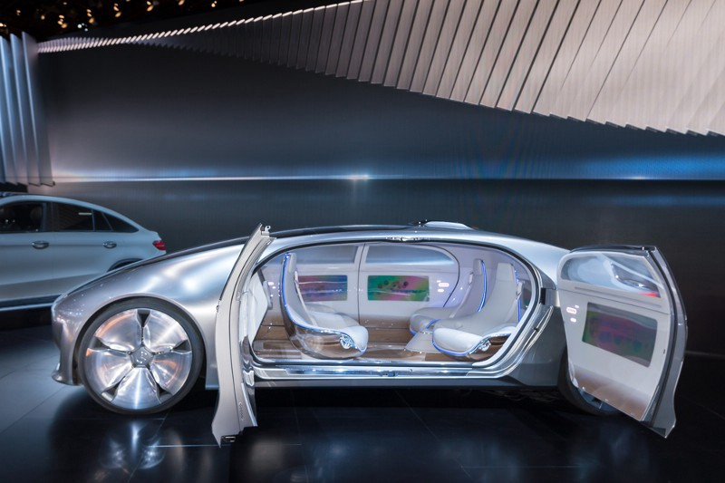

Our City
We are a consulting firm from South Bend, Indiana, a city of 100,000 people. South Bend was founded in 1842 along with the construction of one of the most prestigious colleges in our state, Notre Dame. In the past, the city was the main site of a massive Studebaker plant that closed in 1967. Despite living in a mostly Republican state, South Bend reflects the region of Indiana with a mainly Democratic population. South Bend represents a diverse community full of many different cultures. Our firm, Perfectum Engineering Firm, has been in operation since 2015. We have worked on projects like the N.O.W. trucks that supply necessary nutrition to food deserts all over the US and iodine-strip arsenic testers distributed in Bangladesh both since 2017. Recently we embarked on an ambitious project consulting a firm creating a trash-sorting AI.


Autonomous Vehicles
There are countless reasons to bring autonomous vehicles to the city of South Bend. Economically, we would save money due to less traffic and the lower frequency of crashes would allow resources to departments. Managing congestion would save billions of dollars annually as human drivers are prone to error and do not always drive efficiently. Autonomous vehicles have been proven to run according to near perfection, making traffic jams obsolete. These vehicles are expected to be mainly electric, which would dramatically reduce carbon emissions, lowering costs of air pollution. The introduction of autonomous vehicles would lead to a more progressive future.

Pros
Safety
Economics
Environmental, Ride Sharing
Time & Convenience
Cons
Economics
Reliability Concerns
